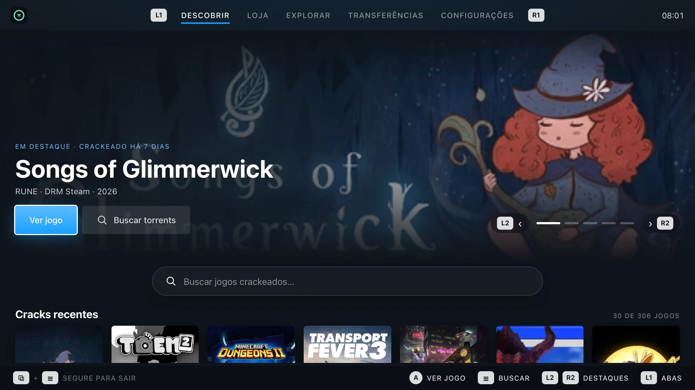
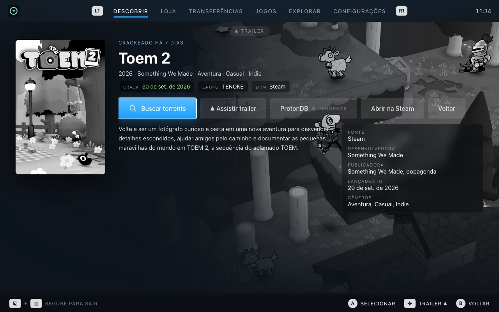

Sua loja de jogos dentro do Modo de Jogo.
Descubra lançamentos, busque, baixe, instale e cuide dos seus jogos pelo controle — com Proton, componentes, patches, arte oficial da Steam e VPN — sem sair do SteamOS e sem instalar nada no sistema.
curl -fsSL https://anarqz.github.io/pishop/install.sh | bash
No Modo Desktop, abra o Konsole, cole e pressione Enter.
- Sem root nem senha
- Zero dependências
- 100% no controle
- Steam Deck · ROG Ally


Uma linha. Como o EmuDeck.
O instalador baixa a versão mais recente e o navegador embutido, e cria o atalho na Steam com capa, banner e ícone. Depois disso o piShop se atualiza sozinho.
-
1
Vá para o Modo Desktop
Botão Steam → Energia → Mudar para o Modo Desktop.
-
2
Cole o comando no Konsole
Copie o comando acima, cole no Konsole e pressione Enter. Se a Steam estiver aberta, o instalador pergunta antes de fechá-la.
-
3
Volte ao Modo de Jogo
Biblioteca → Não-Steam → piShop. Pronto para jogar.
curl -fsSL https://anarqz.github.io/pishop/install.sh | bashcurl -fsSL https://anarqz.github.io/pishop/install.sh | bash -s -- --uninstallParece SteamOS. Porque foi feito para ele.
Capturas reais do app na resolução de cada aparelho. A interface acompanha a escala da Steam sozinha.
Tudo o que um portátil com SteamOS pedia.
Um binário Rust estático, uma interface React e um navegador embutido — sem tocar no sistema.
O que vem por aí.
Trabalho em andamento e ideias em pesquisa. Nada aqui tem data — mas é para onde o piShop está indo.
Nativo, leve e sem dependências.
Tudo fica em ~/Applications/piShop e ~/.local/share/piShop. As atualizações do SteamOS não mexem em nada.
- Rust · axum · tokio
- React · Vite · PWA
- Chromium (Chrome for Testing)
- librqbit · BitTorrent
- smb-rs · SMB2/3
- Proton · winetricks
- NetworkManager · WireGuard · OpenVPN
- Steam · SteamGridDB · TheGamesDB
- The Pirate Bay · Prowlarr
- isitcracked
Perguntas frequentes
Pronto para jogar?
curl -fsSL https://anarqz.github.io/pishop/install.sh | bash